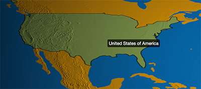

Map 3D
map3d类型提供了3D地图的可视化，支持 ECharts 中map原有配置项的同时也加入了大量新的配置项。如果你之前使用过 ECharts 的map组件的话对下面的示例肯定不会陌生。
Simple Example
var option = {
title: {
show: true,
text: 'Globe Visualization'
},
series: [{
name: 'globe',
type: 'map3d',
// 底图配置
baseLayer: {
backgroundColor: '',
backgroundImage: 'asset/earth.jpg',
},
// 表层（比如云层）配置
surfaceLayers: [{
type: 'texture',
image: 'asset/clouds.png'
}],
// 地图绘制配置成只绘制轮廓线和标签
itemStyle: {
normal: {
label: {
show: true
},
borderWidth: 1,
borderColor: 'yellow',
areaStyle: {
color: 'rgba(0, 0, 0, 0)'
}
}
},
// Empty data
data: [{}]
}]
}
Series Option
系列配置项, 通用部分详见 ECharts
mapType
mapType: 'world'
同 ECharts 中 map 的 mapType, 默认是 world。支持但是不建议使用其它非世界地图的类型。
mapLocation
mapLocation: {
x: 0,
y: 0,
width: '100%',
height: '100%'
}
同 ECharts 中 map 的 mapLocation，指定地球在视图中的位置。可以是绝对的像素坐标，也可以表示相对的百分比。
background
环境贴图，图片需要是一张全景图。示例 map3d_sun中就使用了下图作为星空背景。

flat
flat: false
是否使用平面地图。
flatAngle
flatAngle: 30
当开启平面地图模式的时候，该选项可以用来配置地图平面与屏幕平面的夹角。
hoverable
hoverable: false
clickable
clickable: false
selectedMode
selectedMode: false
区域选择模式，可以是多选'mutiple'，单选'single'，默认关闭
baseLayer
底层基本地图的绘制配置。
backgroundColor
backgroundColor: 'black'
底图背景色
backgroundImage
backgroundImage: 'none'
底图背景图片，覆盖在地图背景色上，可以是Image url，Image dom 或者 Canvas dom。
注意：WebGL 是不允许图片跨域加载的，所以如果是跨域的图片可能会报 tainted canvases may not be loaded 的错误。
quality
quality: 'medium'
底图贴图质量，即贴图的分辨率. 可选项：
'high'(4096 x 4096)
'medium'(2048 x 2048)
'low'(1024 x 1024)
也可以直接配置数值分辨率比如512。
heightImage
地表高度图，在启用光照后用来表现地表高度不同所产生的阴影。下面两张图分别是美国区域使用和未使用高度图的效果。

light
光照配置，见示例 map3d_sun
show
show: false
是否展现光照。
time
设置时间，用来计算日照的位置和角度。默认使用系统时间。
sunIntensity
sunIntensity: 1
日照强度, ECharts-X 使用 lambert shading 表现日照产生的明暗面。
ambientIntensity
ambientIntensity: 0.1
环境光照强度，有时候为了更清楚的展现地球暗面的信息，需要把这个值调高。
surfaceLayers
除了基于 ECharts map 的底层基本地图，map3d 可以分层绘制其它数据，比如风场的可视化。对于每一层有如下配置项:
name
层名称
type
层类型，可选项：
'texture' 普通从外部加载的纹理，可以选择该层的纹理图片，比如开头示例中的云层。
'particle' 粒子纹理，用来描绘向量场，例如风场和洋流。
distance
层的高度
image
仅在type:'texture' 时有效，指定外部加载的图片，可以是 url 或者 dom。
size
size: [2048, 1024]
层表面纹理的大小，默认为 2048 x 1024，注意部分用户环境的 GPU 不支持大于 2048 的纹理。
particle
仅在type:'particle' 时有效，需要浏览器支持浮点纹理扩展，除了移动端因为硬件的限制，目前绝大部分的PC浏览器都是支持的。
particle 的配置项如下
| 名称 | 默认类型 | 默认值 | 描述 |
|---|---|---|---|
| vectorField | Array | HTMLImageElement | HTMLCanvasElement | 无 | 粒子的速度向量场。向量场有两种表示方法，可以是一个二维矩阵的数组，行表示从经度 -180 到经度 180，列表示从纬度 -90 到纬度 90，数组每一项为向量场的速度，可以是一个[x, y]数组，或者是一个{x: x, y: y}对象。x, y的值都需要归一化到 -1 到 1。除了二维矩阵，向量场也可以使用一个图片表示，例如下面 Fig2 就是一张风速的向量场图片。 |
| color | String | '#fff' |
粒子颜色 |
| sizeScaling | number | 1 |
默认粒子大小从 0 到 1（取决于速度的大小），sizeScaling 描述粒子的缩放系数，例如 sizeScaling 值为 7 的时候粒子的大小就是 0 到 7。 |
| speedScaling | number | 1 | 速度缩放系数 |
| number | number | 65536 |
粒子数目，默认为256 x 256即65536。 |
| motionBlurFactor | number | 0.99 |
动态模糊系数，动态模糊效果会保存上一帧的图片乘上透明度系数即 motionBlurFactor 再与当前帧的图片混合。该系数越大则粒子运动的尾迹越长。 |

具体的示例可以参见风场的可视化示例
roam
鼠标漫游配置
autoRotate
autoRotate: true
地球是否开启自动旋转，flat: false时有效。默认开启。
autoRotateAfterStill
autoRotate: 3
在鼠标未操作地球一段时间后会开启自动旋转，autoRotate: true时有效。默认为3s。
focus
初始化镜头聚焦的区域名称，比如需要停留到中国上空时，可以配置为 focus: 'China'。
zoom
zoom: 1
初始化的缩放大小。
minZoom
minZoom: 0.5
最小缩放值
maxZoom
maxZoom: 1.5
最大缩放值
preserve
preserve: true
是否在每次 setOption 后保留之前的鼠标操作状态。